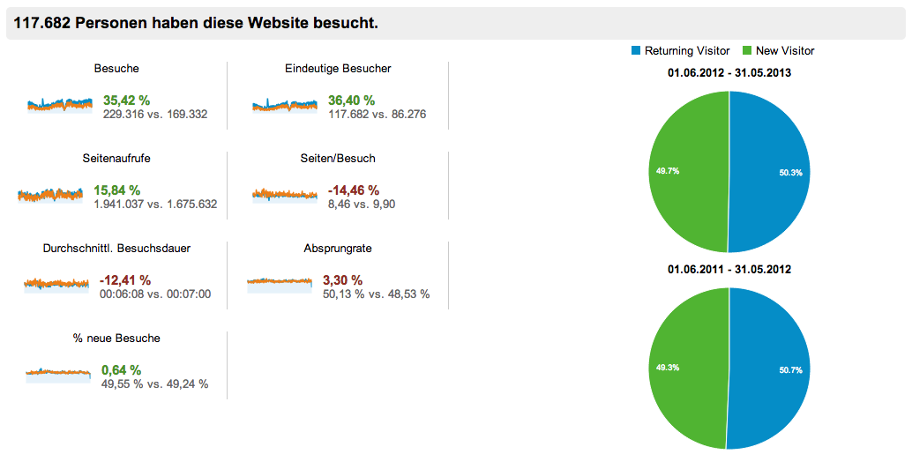

Im Vergleich zum Vorjahreszeitraum hat die Arachne Datenbank erneut einen Anstieg der Besucherzahlen zu verzeichnen.
Insgesamt waren es ca. 35% mehr Besucher: 

Neben dem allgemeinen Anstieg an Besucherzahlen, hat sich der Anteil der Aufrufe aus dem Ausland fast verdoppelt. Die stärksten Zuwächse haben dabei Besuche aus den USA und Italien.